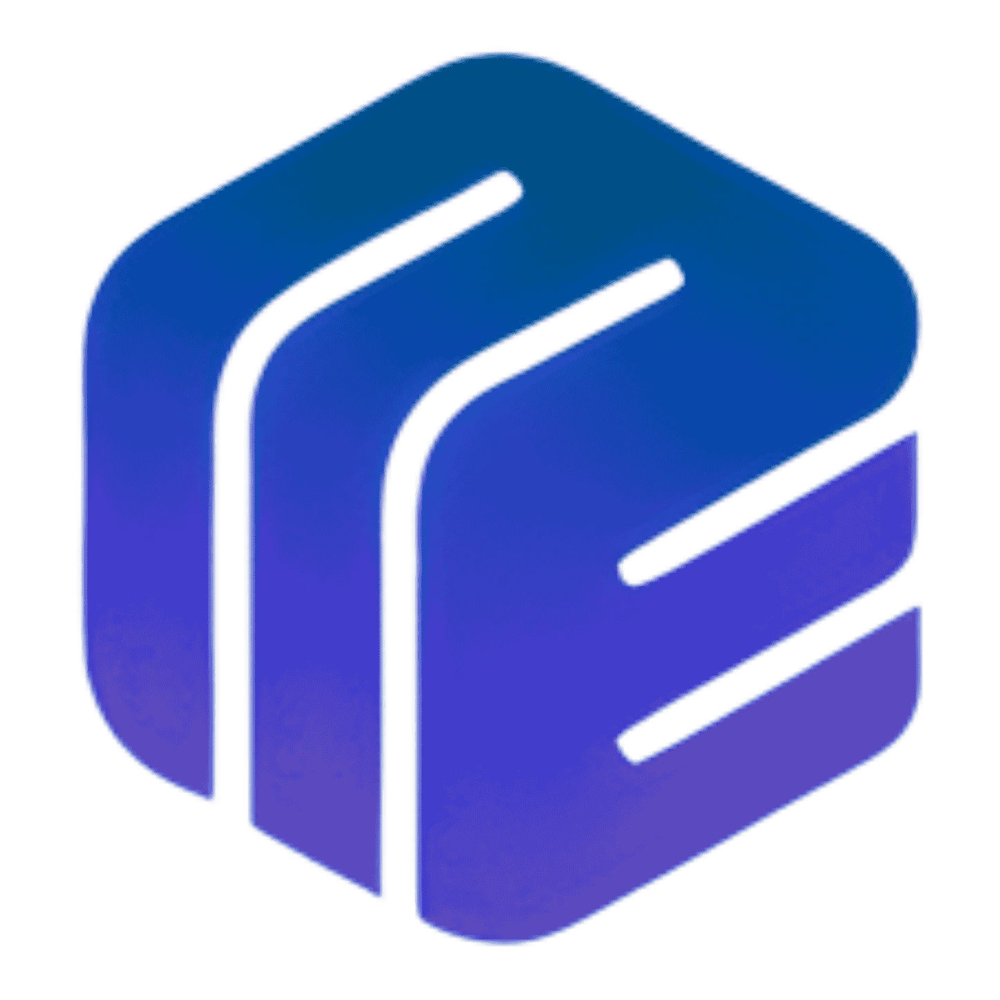

Wearable-Sensing Research
My research experience includes multimodal wearable sensing for gesture and motion recognition, combining tactile pressure sensors, IMU signals, and motion-capture data with deep learning and time-series analysis.
AI Systems | Wearable Sensing | Cybersecurity
M.Sc. graduate in Computer Science and Engineering
Seeking PhD Opportunities
in AI, autonomous systems, and communication networks.
I am a Research Assistant at the i-Sensing Lab, The University of Aizu. My research combines multimodal AI, wearable sensing, deep learning, and time-series analysis for sign-language recognition. My broader interests include autonomous systems, communication networks, and cybersecurity.
Research experience and interests in multimodal AI, wearable sensing, cybersecurity, and networked systems.
My research experience includes multimodal wearable sensing for gesture and motion recognition, combining tactile pressure sensors, IMU signals, and motion-capture data with deep learning and time-series analysis.
My research interests include multimodal sensor fusion, efficient AI for embedded systems, and AI for healthcare. I am particularly interested in autonomous systems and communication networks, alongside cybersecurity and secure networked systems.
My recent research interests include safe and reliable tool-using LLM agents, distribution-shift monitoring, and robust cross-dataset network intrusion detection.
4 peer-reviewed publications: 2 IEEE conference papers and 2 journal articles (2025–2026).
An efficient deep learning model for static ASL gesture recognition in resource-constrained environments.
Enhanced nondestructive prediction of peach sugar content using hyperspectral imaging and convolutional neural networks.
Chest compression skill evaluation system using pose estimation and web-based application.
Academic background and qualifications.
The University of Aizu
The University of Aizu
American International University-Bangladesh
Research and teaching experience spanning AI, wearable sensing, cybersecurity, and networking.
i-Sensing Lab · The University of Aizu

The University of Aizu
American International University-Bangladesh
Selected projects across research prototypes, cybersecurity, and software systems.
Completed master's thesis project evaluating whether hysteresis-derived sensor features improve deep-learning performance for dynamic sign-language recognition.
Designed a data glove, tested it using IMADA, calibrated sensors, and prepared real-time raw sensor data collection workflows.

Self-designed glove layout (PE-DESIGN) for the Globeride data glove.
Undergraduate thesis prototype focused on phishing attack detection for safer browsing and future secure-system development.
Built Superstore, Study Assist, Bookshop, and Restaurant Management projects using database, OOP, and reporting concepts.
Data-glove system for dynamic sign language recognition using pressure sensors, IMU signals, and deep learning. Full implementation and source code available on GitHub.


Self-designed glove embroidery layouts (PE-DESIGN) showing conductive-thread sensor routing.
Technical capabilities organized by research and engineering area.
Available for research collaboration and technical opportunities.
Dr. Jing Lei, The University of Aizu | leijing@u-aizu.ac.jp
Dr. Dip Nandi, AIUB | dip.nandi@aiub.edu
Abhijit Bhowmik, AIUB | abhijit@aiub.edu
Dr. M. M. Manjurul Islam, Ulster University | m.islam@ulster.ac.uk